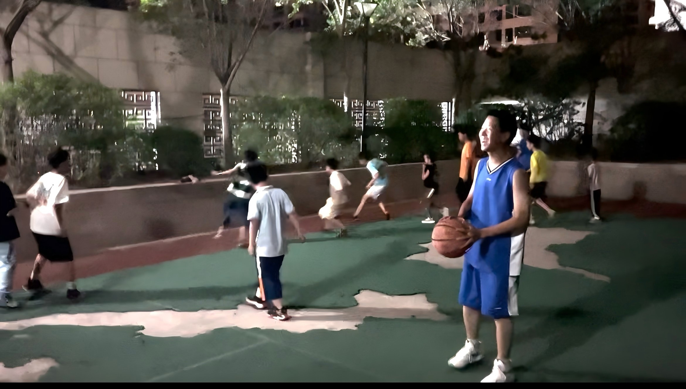
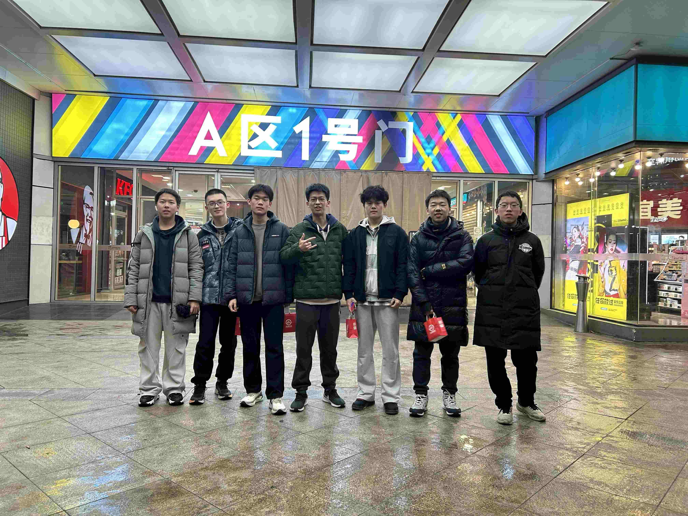
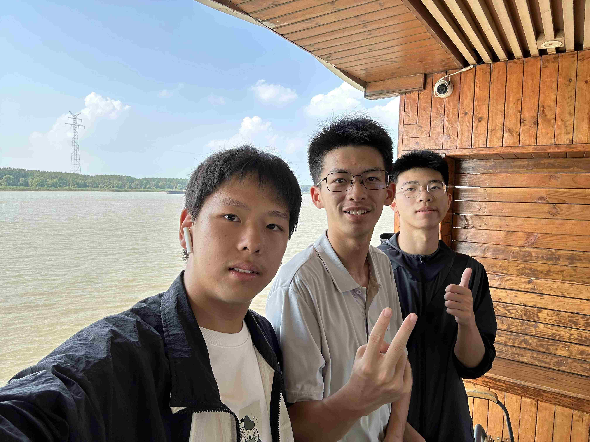
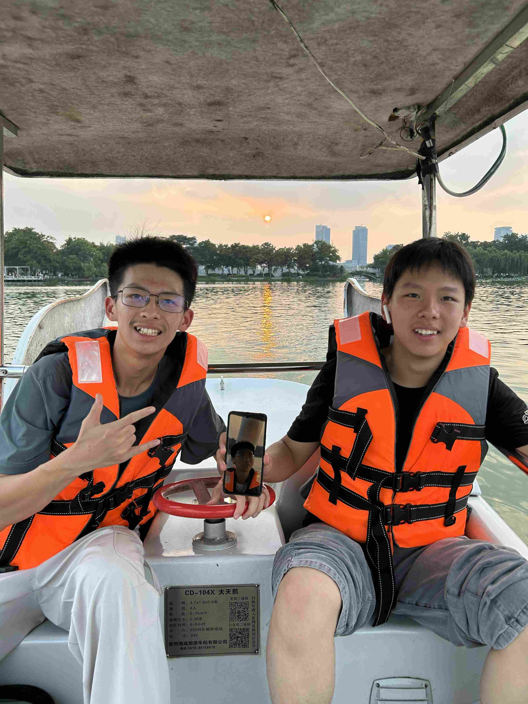
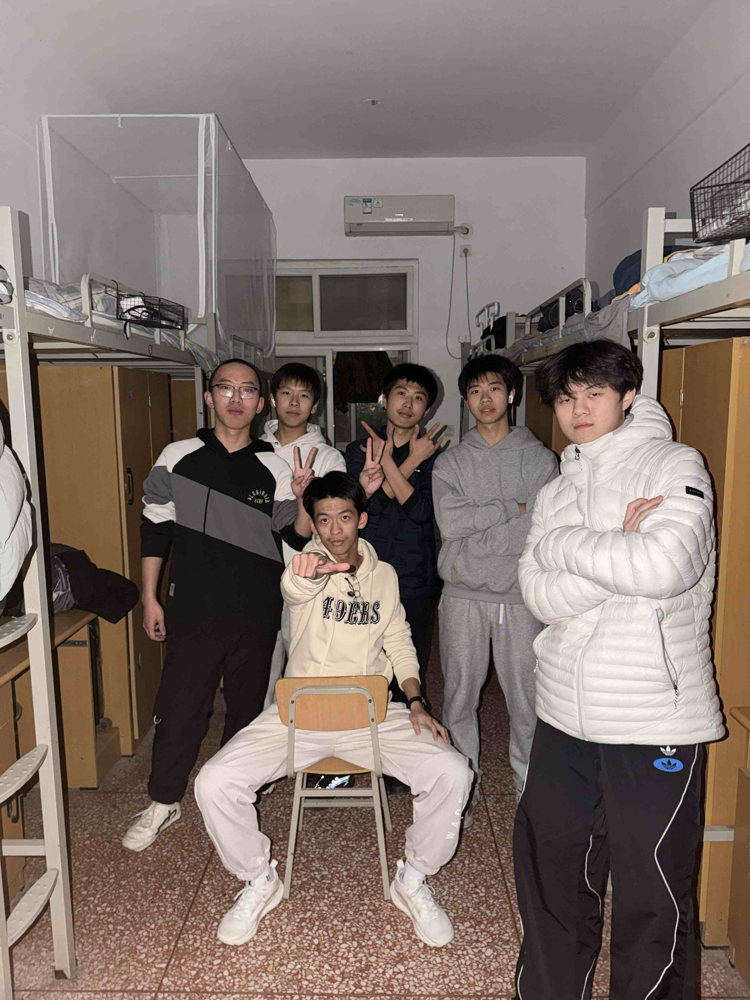
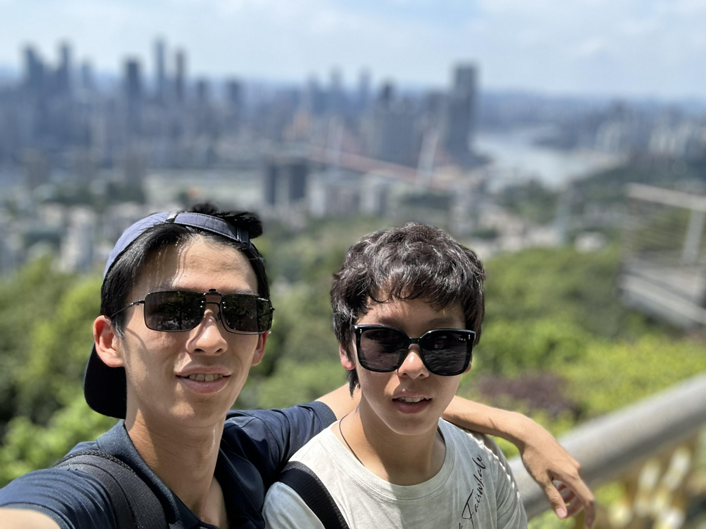

第一张 · 初见
the day we met
梦开始的地方，在这里相遇，开始一篇旅程。
这个网站谨在纪念和好兄弟时光。翻开照片，时光就会一页一页翻回去——愿你翻到的每一页，都还带着那天的风。
Here's to the roads we shared — and all the roads still ahead.







把鼠标放在照片上滚动滚轮，或点击照片，一张张翻看
梦开始的地方，在这里相遇，开始一篇旅程。
第一次一起耍，炎炎夏日的汗水成为最好的注脚
没有什么是一起出去玩解决不了的，如果有，就再去一次。
第一次独立的旅游，一生难忘的回忆。
陌生的城市却是最熟悉的人，这艘小船承载了太多回忆。
那个夜晚：宿舍、熬夜、说不完的话，以及约定好还要再去的远方。
高考之前，也是意气风发之时，那份少年心气愿你我永存。
新的旅程就在眼前，有些时候，一瞬间也是永远。
兄弟：
写在这里随便写上几笔，淡开学校的世界，沉浸于往事之中。这些年，我们一起走过陌生的城市，在深夜的路边摊聊到过天亮，也一起熬过了谁都不容易的日子。
谢谢你来过我的青春，还一待就是这么多年。愿我们以后的路，都像手账里的这些页——有风景，有故事，也一直有彼此。
前路顺遂，再见时，仍是少年。
— yours, always.